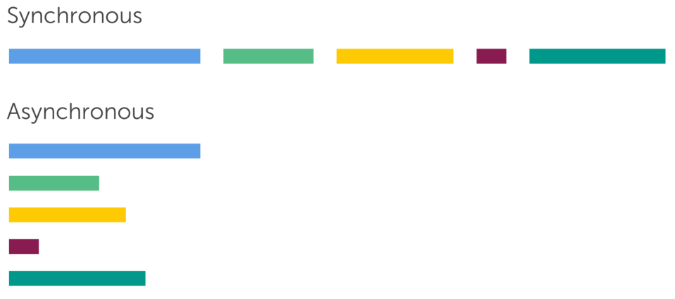
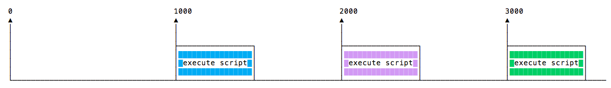

1. Асинхронний JavaScript
При розробці часто доводиться мати справу з асинхронною поведінкою, яке може бентежити новачків у яких є досвід роботи з синхронним кодом.
- Синхронний код виконується послідовно, кожна інструкція очікує, перед
виконанням, поки виконається попередня. - Асинхронний код виконується, без виконання попередніх інструкцій.

1.1. Синхронний код
У синхронному коді, якщо є дві інструкції: L1, за якою слідує L2, L2 не
може почати виконання до тих пір, поки L1 не завершить виконання.
Уявіть чергу покупки квитків на поїзд. Ви не можете почати купувати квиток на поїзд до тих пір, поки не настане ваша черга. Точно так люди, що стоять за вами, не можуть почати купувати квитки до тих пір, поки не купите ви.
Цей код - синхронний, інструкції обробляються послідовно.
console.log('First');
console.log('Second');
console.log('Third');
1.2. Асинхронний код
В асинхронному коді, якщо є дві інструкції: L1, за якою слідуєL2, де L1
планує виконання будь-якої задачі в майбутньому, то L2 виповниться раніше ніж
L1.
Уявіть обід в ресторані. Ви, і інші відвідувачі, замовляєте їжу. Вам не потрібно чекати, поки їм принесуть їжу, перш ніж замовляти. Точно так же інші відвідувачі не повинні чекати, поки ви отримаєте свою страву і поїсте, перш ніж вони зможуть замовити. Кожен отримає своє блюдо, як тільки його закінчать готувати.
Наступний код - асинхронний. З функцією setTimeout ми познайомимося далі.
Зараз про неї нам потрібно знати тільки те, що вона приймає 2 параметри,
callback-функцію яка буде викликана після закінчення часу яке ми передаємо
другим аргументом.
// виконається першим
console.log('First');
setTimeout(() => {
// виконається третім, через 2 секунди
console.log('Second');
}, 2000);
// виконається другим
console.log('Third');
Асинхронність в JavaScript: Посібник для тих, хто хоче розібратися
1.3. Асинхронність і багатопоточність
Не плутайте асинхронність і багатопоточність. Багато хто думає, що багатопоточність і асинхронність - це одне і те ж, але це не так.
Наведемо просту аналогію яка все розставить по своїх місцях. Уявіть що ви шеф в ресторані і приходить замовлення на яйця і тости.
- Синхронний підхід: спочатку ви готуєте яйця, потім тости.
- Асинхронний підхід (однопотоковий): ви починаєте готувати яйця і встановлюєте таймер, потім ви починаєте готувати тости і так само встановлюєте таймер. Поки яйця і тости готуються, ви забираєте на кухні. Коли таймери спрацьовують, ви знімаєте з вогню яйця і дістаєте тости з тостера, і подаєте їх.
- Асинхронний підхід (багатопоточний): ви наймаєте ще двох кухарів, одного для приготування яєць і одного для приготування тостів. Тепер у вас є проблема управління кухарями (потоками), щоб вони не конфліктували один з одним на кухні при спільному використанні ресурсів.
В асинхронних багатопоточних процесах ви призначаєте завдання працівникам. В асинхронних однопоточних процесах у вас є графік завдань, де деякі завдання залежать від результатів інших. У міру виконання кожного завдання викликається код, який планує наступну задачу, яка може бути запущена, з урахуванням результатів тільки що виконаної задачі. Але вам потрібен тільки один працівник для виконання всіх завдань, а не один працівник на завдання.
2. setTimeout і setInterval
Внутрішній таймер-планувальник дозволяє відкладати виклик функції на певний період часу. Для цього є тайм-аут та інтервали, які дозволяють контролювати, коли і як часто викликається функція.
Таймери реалізуються в браузері окремо, а не вбудовані в мову.
2.1. setTimeout і clearTimeout
Тайм-аут дозволяє запускати функцію після закінчення певного часу.
const timerId = setTimeout(callback, delay, arg1, arg2, ...);
- Приймає як мінімум два аргументи, callback-функцію
callbackі час
затримкиdelayв мілісекундах, по завершенню якого один раз буде
викликана callback-функція. - Додаткові аргументи будуть передані callback-функції.
- Повертає цифровий ідентифікатор створеного таймера, який використовується для його видалення.
Посилання на приклад в Codepen.io
Якщо нам, з якоїсь причини, потрібно скасувати виклик функції всередині
тайм-аута, використовується функція clearTimeout (id), яка отримує
ідентифікатор таймера і очищає (видаляє) його.
function sayHello() {
console.log('Hello!');
}
const timerId = setTimeout(sayHello, 5000);
clearTimeout(timerId);
Оскільки ми використовували clearTimeout, а він виповниться раніше, таймер з
TimerId буде очищений і стане не активний. Він буде діяти так, як ніби він
ніколи не існував, і тому в консоль нічого не виведеться.
2.2. setInterval і clearInterval
Інтервали — це більш простий спосіб повторення коду знову і знову, з встановленим проміжком часу повторень.

Функція setInterval має синтаксис, аналогічний setTimeout.
const timerId = setInterval(callback, delay, arg1, arg2, ...);
Сенс аргументів той же самий. Але, на відміну від setTimeout, вона запускає
виконання функції не один раз, а регулярно повторює її через вказаний інтервал
часу. Зупинити виконання можна викликом clearInterval (id).
Посилання на приклад в Codepen.io
2.3. this всередині функцій-інтервалів
setTimemout і setInterval це методи глобального об'єкта window, саме тому
ми не викликаємо їх як window.setTimeout().
Необхідно бути уважними з this всередині функцій-інтервалів. При класичної
callback-функції, this отримає посилання на window, а при стрілкової функції
this буде з зовнішньої області видимості.
Посилання на приклад в Codepen.io
2.4. Реальна частота спрацьовування лічильника
У браузерного таймера є мінімальна можлива затримка. В сучасних браузерах вона
змінюється від приблизно 0мс до4мс. У старіших вона може бути більше і
досягати 15мс. За стандартом, мінімальна затримка становить 4мс. Так що
різниці між setTimeout (..., 1) і setTimeout (..., 4) немає.
У ряді ситуацій таймер буде спрацьовувати рідше, ніж зазвичай. затримка між
викликами setInterval (..., 4) може бути не 4мс, а30мс або навіть
1000мс. При занадто великому завантаженні процесора деякі запуски
функцій-інтервалів будуть пропущені.
Більшість браузерів, в першу чергу десктопних, продовжують виконувати
SetTimeout і setInterval, навіть якщо вкладка неактивна. При цьому ряд з них
знижують мінімальну частоту таймера, до 1 разу в секунду. Виходить, що в фоновій
вкладці буде спрацьовувати таймер, але рідко.